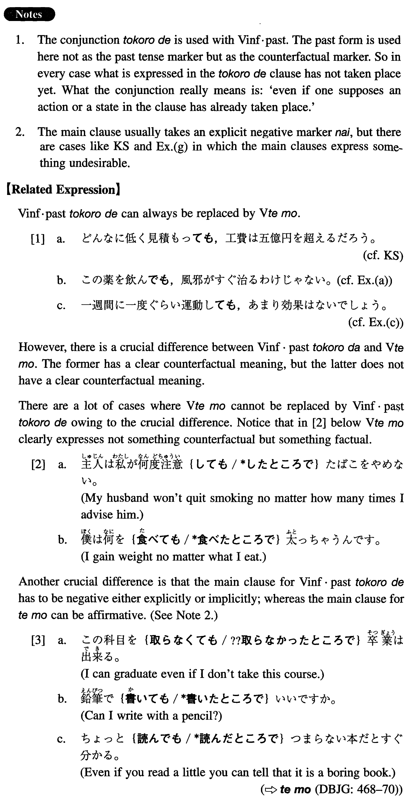

←
DoJG
→
たところで
(I. 452)
Example sentences
(ks).
どんなに低く見積もった
ところで
、工費は五億円を超えるだろう。
No matter how low we estimate the construction expense it will go beyond 500 million yen.
(a).
この薬を飲んだ
ところで
、風邪がすぐ治るわけじゃない。
Even if you took this medicine, it would not be the case that your cold would be cured right away.
(b).
この本を読んだ
ところで
、日本の経済の全体は分からないだろう。
Even if you read this book, you wouldn't understand the entire economy of Japan.
(c).
一週間に一度ぐらい運動した
ところで
、あまり効果はないでしょう。
Even if you exercise once a week, it won't be very effective.
(d).
どんなに頑張った
ところで
、この科目では優が取れるはずがない。
No matter how much I worked, it would be impossible to get an A in this course.
(e).
休みに天気が良くなった
ところで
、どこかへ出かける当てもない。
Even if the weather gets better on the holiday, there is no particular place to go.
(f).
日本語が話せた
ところで
、日本へ行く金もないので、何にもならない。
Even if I were able to speak Japanese, it wouldn't amount to anything, because I cannot afford to go to Japan.
(g).
これ以上話し合った
ところで
、恐らく無駄でしょう。
Even if we discussed it more, it would probably be futile.
(h).
問題が起こった
ところで
、君には迷惑はかからない。
Even if a problem arises, it will not cause you any trouble.
Formation
Vinformal past
ところで
読んだ
ところで
Even if someone read something
飲んだ
ところで
Even if someone drank something
